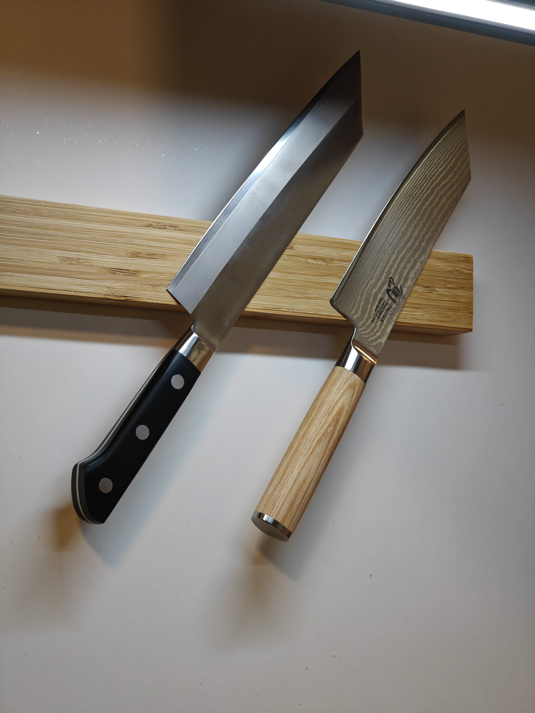
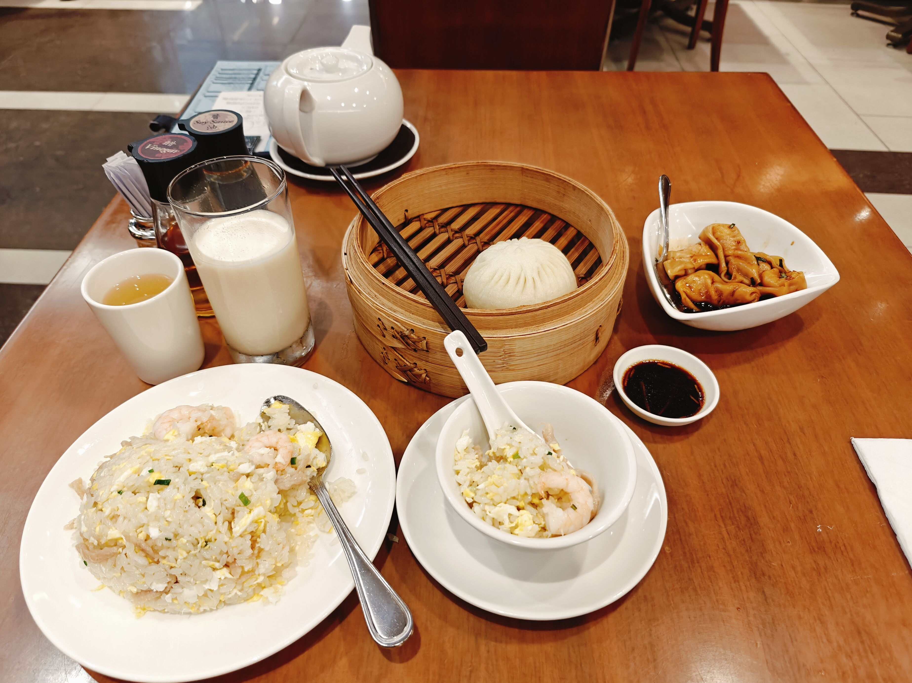
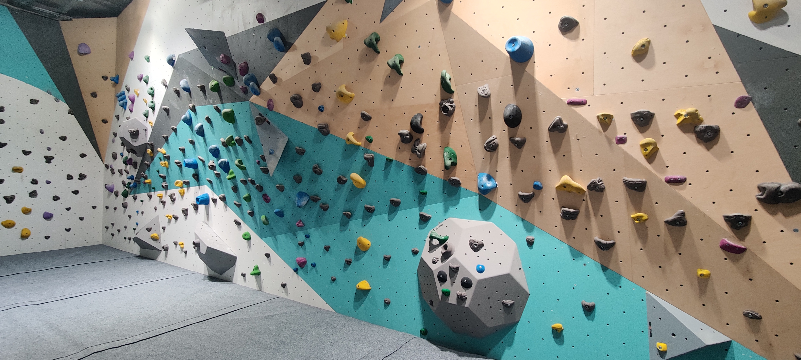
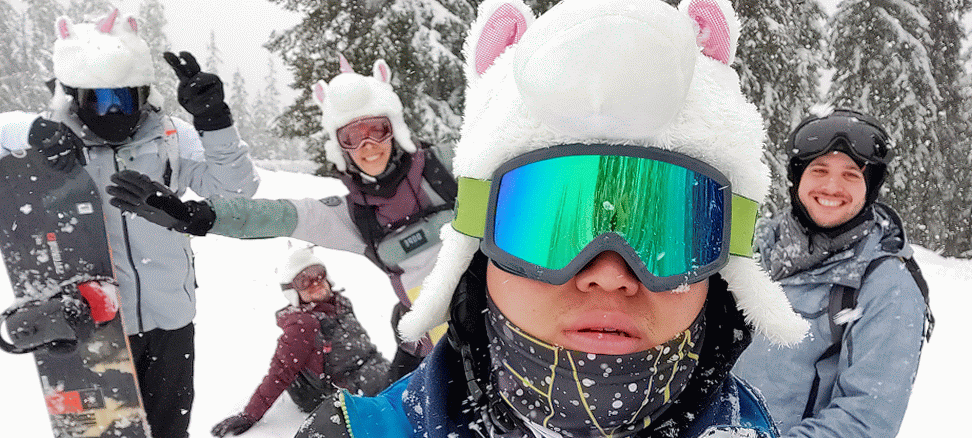

About Me
I enjoy various activities and learning new hobbies! But some things are constants in my life. While I am on the lookout for more exciting new fields to discover, here are my current key interests!
Food
Cooking
I love cooking food, any cuisine really. That being said, I do find myself quite proficient in both Asian and French cuisines (I grew up in France in a Chinese household).
Some friends have gifted me another Japanese Kiritsuke Knife (left), this one being longer than my previous one (right). It's crazy sharp and perfectly balanced (as all things should be)!
Eating
While I love to cook, I think I love to eat even more. If I had multiple stomachs, they'd all be as full as my sole one I currently have. Can't stop (won't stop). I live in Paris, so in terms of cuisine variety, I am on the luckier side. But I gained over 10kg (22pounds) in less than a year because of constant eating out. Careful out there...
This is one of my latest meals from my trip in HK @ Ding Tai Fung, amazing and fairly cheap!
Travels
Not very eco-friendly, although some interesting alternatives exist. Trying to be more concious about my footprint, but it is a very hard sacrifice that I have a hard time making as of now (forgive me).
Me during my return flight from Hong Kong to Paris in a very empty plane!
Sports
Running

Got into the trend since mid 2024, quite cathartic, although I've lost the habit very recently. Gotta get back into it depsite the colder days! And since I've very recently turned 30, I think I'm supposed to run a semi or 10k, or something like that?
Never knew midnight sports sessions could feel so good. You sleep very well afterwards.
Climbing
Haven't been there in a while but want to now that I have more time! I've poured in quite a fair amount of hours into climbing, really fell in love with the sport during summer a couple years back. I remember spending hours watching Youtube videos on how to better climb, and then finding out that real life is much harsher...
My old climbing gym I used to go to, should I pop by again? It is one of the biggest ones in Paris!
Skiing
Ski season is around the corner, already have a first trip planned, why not more! Skiing is obviously something that may become a mythical sport due to climate change, and I grew fond of it through multiple ski trips when I was youger. It is quite exhausting, but the whole vibe around it is just something else.
Me and some friends at last year's ski trip.
Gaming
Started in Middle School with my first MMORPG Dofus (OGs know), been a gamer since I entered Engineering school (skipping classes was the key), and it has been an integral part of my life since then (although I do play way less since I've started working).
Currently playing several games, but the new TFT season is on, and Dofus was relaunched in its newest version, Unity. I have to admit, I've put in more hours than I'd like to admit...
Dogs
I love dogs. All dogs. But I especially LOVE Corgis. I have no idea why. But I love them. I will have a Corgi one day. I must.
Here's a big photo of some dogs I met in Hong Kong. Very chill dogs. The best dogs ever. Not Corgis, but still very cute.